Before / reference / after
Bounded visual review v1 · retrieved 17 November 2026 · offline content fixtures · Chromium 156.0.8078.4.
This gallery does not establish pixel-perfect Google equivalence. Live desktop and mobile searches were CAPTCHA-blocked. The fallback reference is a published Google desktop AIO screenshot with unknown original date, browser, locale, fonts and viewport. Mobile has no verified Google reference. Read the full methodology and data audit, provenance/hashes, and machine-readable comparisons.
1. Same-content AIO excerpt, desktop
The fixture uses the published “drop shipping” JSON excerpt. It lacks the screenshot's thumbnail, emphasis, citation-3 mapping and later items. Full source snippets are intentionally retained. Before and after images are viewer crops, not Google screenshots.
Invented gradient enclosure, numbered citations and source cards; explicit list-item titles were not rendered.

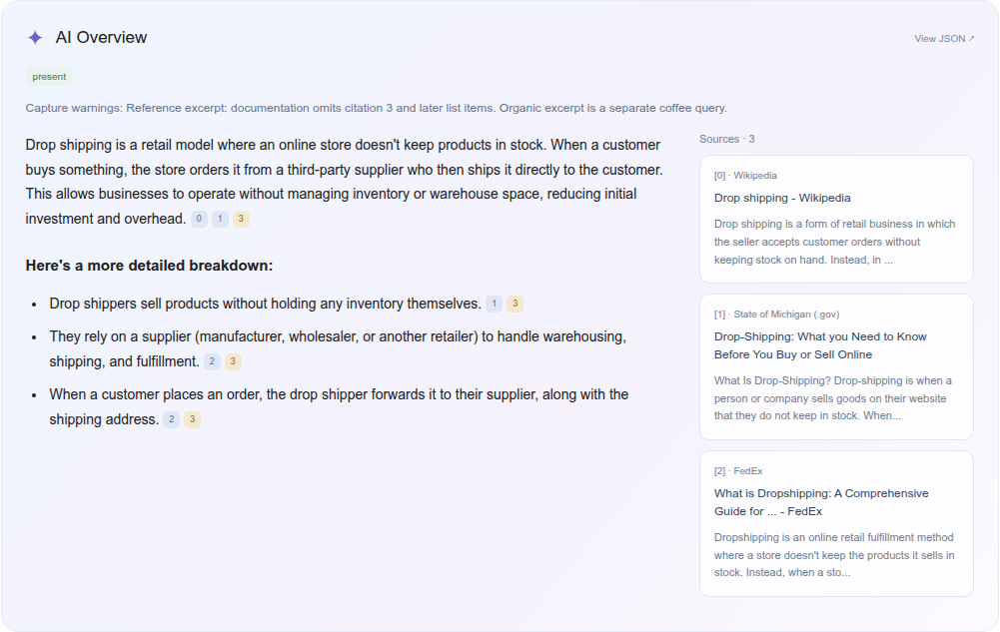
SerpAPI documentation, native 960×818 raster. Expanded desktop AIO with right-hand links. Original capture metadata unknown.

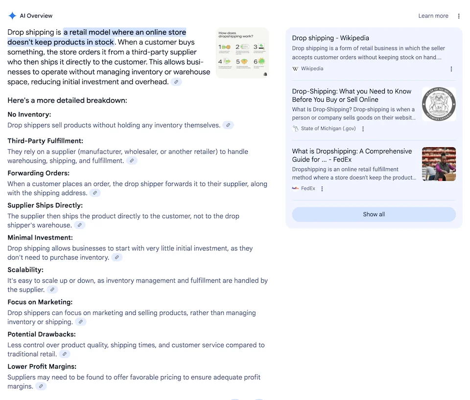
White answer area, 360px pale source panel, link-glyph groups, explicit list titles. Unmapped indexes and full snippets stay honest.

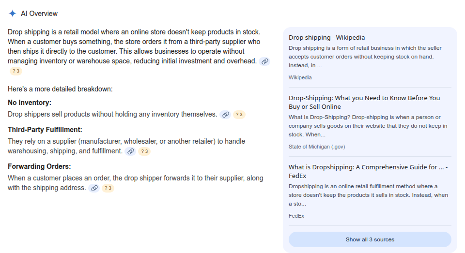
Single comparison board · 50% reference/after overlay. The whole-region overlay is qualitative: unmatched text and missing assets are not styling errors and no overall score is claimed.


2. Matching title crops: font discrepancies remain
These crops exclude missing thumbnails and contain identical title text. Dark foreground is thresholded at 50%, cropped and top-left aligned. The organic reference is explicitly normalized to 62.5%; that is not a verified DPR. Lower RMSE is closer. A 30-candidate local font fit improves the source-title crop; the organic-title crop remains worse. Neither comparison establishes Google's original font, DPR, or whole-page equivalence. All font-fit candidates are recorded.
| Title foreground | Reference | Before | After | Ink RMSE before → after |
|---|---|---|---|---|
| Source title | 155×13 | 135×10 | 156×13 | 0.16073 → 0.129889 |
| Organic title (normalized) | 347×20 | 318×19 | 317×19 | 0.297533 → 0.308758 |
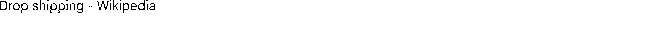
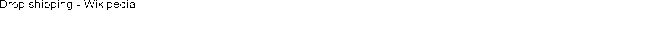
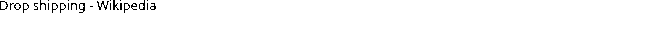
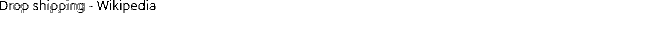
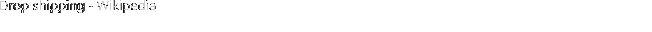
3. Organic result excerpt
The organic result is the second “coffee” example, not a claimed combined drop-shipping SERP. The reference is annotated and magnified. No source logos or thumbnails are substituted. The published JSON provides only three sitelink URLs: the fourth “Coffee Sourcing” label visible in the reference and initial before crop is deliberately absent from the final fixture rather than assigned a guessed URL. That is a text/data difference, not a CSS mismatch.
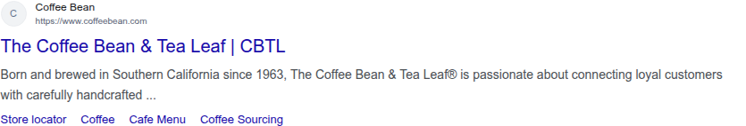

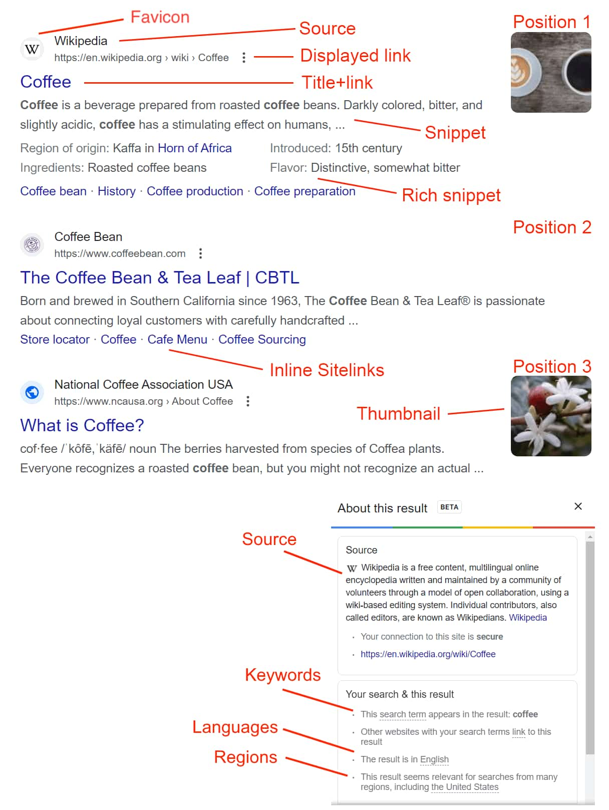
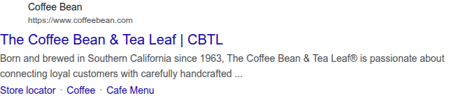
4. Representative saved response — desktop
Both views use exactly the same projected PAP01-01-V1 SerpAPI response. Navigation, diagnostics and JSON controls are separate from the result area. All nine organic results and all seven sources are preserved; the source panel initially shows three, with explicit expansion.

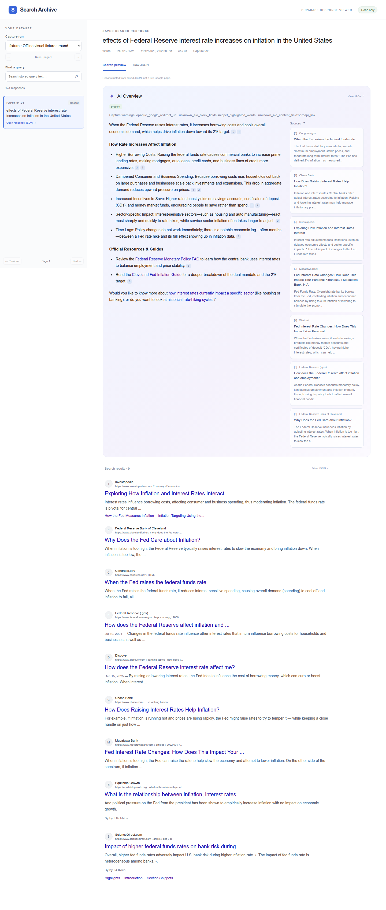

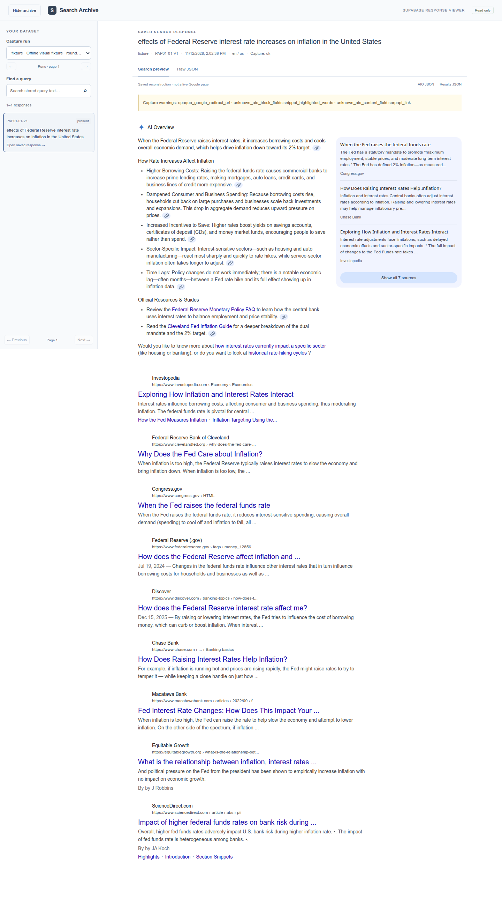
5. Mobile adaptation — not a verified Google match
390×844 viewport, DPR 1. The archive drawer no longer pushes results down the page. Sources are available through a modal button and citation groups. This is regression coverage of our responsive design, not a Google mobile baseline.

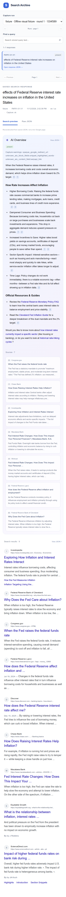

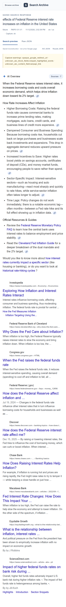
6. Unavailable live reference / original baseline
Desktop CAPTCHA evidence (cropped) · Mobile-viewport CAPTCHA evidence (cropped) · Original synthetic viewer screenshot. The latter is never used as a Google reference.


Rebuild current screenshots with tools/viewer_visual.py, overlays with tools/compare_viewer_visual.py. Reference and before rasters are immutable evidence; update reference versions deliberately. The app remains read-only, localhost-backed and tailnet-only.